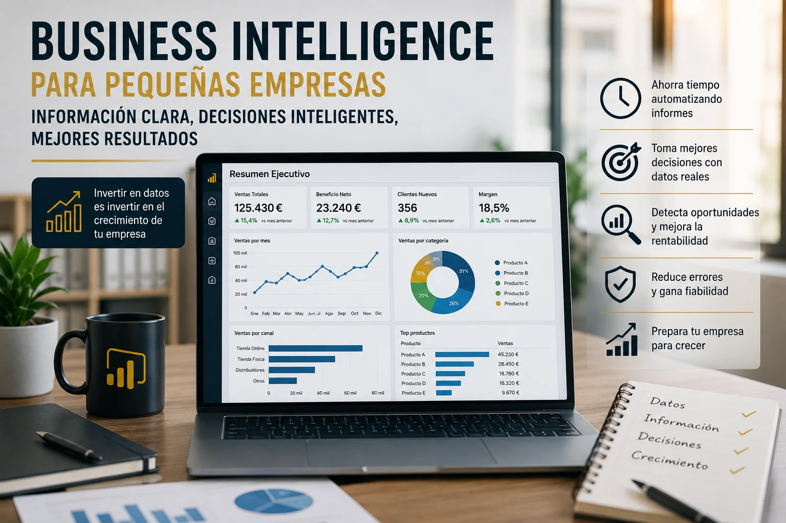

Business Intelligence para pequeñas empresas: por qué merece la pena invertir
El uso de Business Intelligence suele asociarse con grandes compañías, departamentos tecnológicos y proyectos que requieren una inversión difícil de asumir para una pequeña empresa. Sin embargo, esa percepción está cada vez más alejada de la realidad.
Una pequeña empresa también genera información valiosa: ventas, clientes, facturación, costes, inventario, campañas comerciales o productividad. La diferencia no está en disponer de millones de registros, sino en saber utilizar correctamente los datos disponibles para tomar mejores decisiones.
Implementar Business Intelligence no significa necesariamente construir una infraestructura compleja ni transformar todos los procesos de la organización. Puede comenzar con un proyecto concreto, como automatizar un informe mensual, analizar la rentabilidad de los productos o disponer de un dashboard de ventas actualizado.
Cuando se plantea de forma progresiva y adaptada a las necesidades reales del negocio, el Business Intelligence puede convertirse en una inversión especialmente valiosa para una pequeña empresa.
¿Qué es Business Intelligence aplicado a una pequeña empresa?
Business Intelligence, es el conjunto de procesos y herramientas que permiten recopilar, organizar y analizar datos para convertirlos en información útil para la toma de decisiones.
En una pequeña empresa puede consistir, por ejemplo, en conectar los datos de facturación, ventas y clientes para responder preguntas como:
- ¿Qué productos o servicios generan un mayor margen?
- ¿Qué clientes aportan más valor al negocio?
- ¿En qué periodos se producen las mayores ventas?
- ¿Qué gastos están aumentando más de lo previsto?
- ¿Qué oportunidades comerciales no se están aprovechando?
- ¿Qué tareas manuales podrían automatizarse?
Herramientas como Google Cloud y Power BI permiten reunir esta información y presentarla mediante dashboards claros, visuales y actualizables. El objetivo no es crear gráficos atractivos, sino facilitar respuestas que ayuden a gestionar mejor la empresa.
Las pequeñas empresas también necesitan tomar decisiones basadas en datos
Una gran compañía puede tener más información, pero también dispone habitualmente de más recursos para asumir errores. En una pequeña empresa, una mala decisión puede tener un impacto proporcionalmente mucho mayor.
Contratar personal, invertir en publicidad, ampliar el catálogo, ajustar precios o comprar nuevo stock son decisiones importantes. Cuando se toman únicamente por intuición, aumenta el riesgo de utilizar los recursos disponibles de forma poco eficiente.
La experiencia y el conocimiento del negocio seguirán siendo fundamentales. Al contratar el servicio de BI no se pretende sustituir esa experiencia y conocimiento del negocio, sino complementarlos con información fiable.
La pregunta deja de ser únicamente «¿qué creo que está ocurriendo?» y pasa a ser «¿qué muestran realmente los datos?».
¿Por qué merece la pena invertir en Business Intelligence?
1. Porque permite ahorrar tiempo
Muchas pequeñas empresas elaboran sus informes mediante procesos manuales: exportar archivos, copiar datos, actualizar fórmulas y preparar gráficos para una reunión.
Estas tareas pueden parecer pequeñas de forma aislada, pero acumuladas durante todo el año representan una cantidad considerable de horas.
Una solución de Business Intelligence permite automatizar parte del proceso y actualizar la información con mucha menos intervención manual. De esta manera, el equipo puede dedicar más tiempo al análisis y menos a preparar los datos.
2. Porque reduce errores
Cuanto más manual es un proceso, mayor es la posibilidad de cometer errores: fórmulas modificadas, datos duplicados, versiones distintas de un archivo o información desactualizada.
Cuando las decisiones dependen de esos informes, un error aparentemente pequeño puede conducir a una conclusión equivocada.
Centralizar los datos y definir criterios comunes ayuda a mejorar la calidad de la información y a generar confianza en los indicadores utilizados.
3. Porque ayuda a detectar oportunidades
En ocasiones, las oportunidades ya se encuentran dentro de los propios datos de la empresa, pero permanecen ocultas porque nadie dispone de tiempo para analizarlas.
Un dashboard puede ayudar a identificar productos con un margen elevado, clientes con potencial de crecimiento, zonas geográficas más rentables o periodos con una demanda superior a la habitual.
Detectar estas tendencias permite actuar antes y orientar mejor los recursos comerciales.
4. Porque mejora el control del negocio
Una pequeña empresa suele depender en gran medida de unas pocas personas. Cuando la información está repartida entre archivos o depende del conocimiento individual, resulta difícil obtener una visión general del negocio.
Business Intelligence permite centralizar indicadores relevantes y consultar de forma rápida la situación de las ventas, los costes, la rentabilidad o las operaciones.
Esto proporciona mayor control y facilita que los responsables puedan detectar desviaciones antes de que se conviertan en problemas importantes.
5. Porque prepara a la empresa para crecer
Los procesos manuales pueden ser suficientes cuando el volumen de actividad es reducido. Sin embargo, a medida que aumentan los clientes, las operaciones y las fuentes de información, esos procesos empiezan a ser difíciles de mantener.
Iniciar una cultura de datos antes de que aparezcan los problemas ayuda a que el crecimiento sea más ordenado y sostenible.
No es necesario implantar una solución compleja desde el principio. Lo importante es establecer una base que pueda evolucionar junto con la empresa.
El coste de no invertir también existe
Cuando se analiza una inversión en Business Intelligence, normalmente se piensa en el coste de las licencias, el desarrollo o la consultoría. Sin embargo, también debería valorarse el coste de continuar trabajando de la misma manera.
Ese coste puede aparecer en forma de:
- Horas dedicadas a preparar informes manualmente.
- Decisiones tomadas con datos incompletos.
- Errores que obligan a repetir tareas.
- Oportunidades comerciales que no se detectan.
- Falta de visibilidad sobre la rentabilidad real.
- Dificultad para reaccionar con rapidez.
Una inversión no debe valorarse únicamente por su precio inicial, sino también por el tiempo que ahorra, los riesgos que reduce y las decisiones que permite mejorar.
¿Es necesario hacer una gran inversión?
No. Una de las mayores ventajas del Business Intelligence actual es que puede implantarse de manera gradual.
Una pequeña empresa puede empezar con una necesidad concreta y un alcance limitado. Por ejemplo:
- Un dashboard de ventas y rentabilidad.
- La automatización de un informe mensual.
- El seguimiento de clientes y oportunidades comerciales.
- El control de gastos y desviaciones presupuestarias.
- El análisis del inventario o de los pedidos.
Comenzar con un proyecto pequeño permite validar el valor de la solución, aprender a utilizarla y decidir posteriormente si merece la pena ampliarla a otras áreas.
El objetivo no debería ser implantar toda la tecnología posible, sino resolver un problema real de negocio con una inversión proporcionada.
Cómo empezar con Business Intelligence en una pequeña empresa
Una implementación sencilla puede organizarse en varios pasos:
- Identificar una necesidad concreta. Elegir un proceso que consuma tiempo o una decisión que actualmente resulte difícil de tomar.
- Localizar las fuentes de datos. Revisar dónde se encuentra la información necesaria: Excel, ERP, CRM, programa de facturación o base de datos.
- Definir los indicadores importantes. Seleccionar únicamente los KPIs que realmente ayuden a comprender el negocio.
- Crear una primera solución. Diseñar un dashboard sencillo, claro y adaptado a los usuarios que lo utilizarán.
- Medir el resultado. Comprobar cuánto tiempo se ha ahorrado, qué decisiones se han mejorado y qué nuevas necesidades han aparecido.
Este enfoque reduce el riesgo y evita construir soluciones demasiado complejas antes de saber si responden a las necesidades de la empresa.
Business Intelligence no es solo tecnología
Una herramienta por sí sola no transforma una empresa. Para que un proyecto tenga éxito, los indicadores deben estar bien definidos, los datos deben ser fiables y las personas deben comprender cómo utilizar la información.
Por eso, implementar BI no consiste únicamente en instalar Power BI o crear un dashboard. También implica entender el negocio, formular mejores preguntas y convertir los resultados del análisis en acciones concretas.
El verdadero valor aparece cuando la información influye en decisiones como reducir costes, priorizar clientes, ajustar precios o mejorar procesos.
Conclusión
El Business Intelligence no está reservado para grandes corporaciones. Una pequeña empresa también puede beneficiarse de una información más clara, procesos automatizados y decisiones basadas en datos reales.
La inversión puede empezar con un alcance reducido y crecer progresivamente según las necesidades y los resultados obtenidos.
En muchos casos, la pregunta no es si una pequeña empresa puede permitirse invertir en Business Intelligence, sino cuánto tiempo, dinero y oportunidades está perdiendo por no aprovechar correctamente sus datos.
¿Quieres empezar a aprovechar los datos de tu empresa?
Puedo ayudarte a identificar una primera solución de Business Intelligence adaptada a tus necesidades, automatizar informes y crear dashboards que aporten valor real a tu negocio.